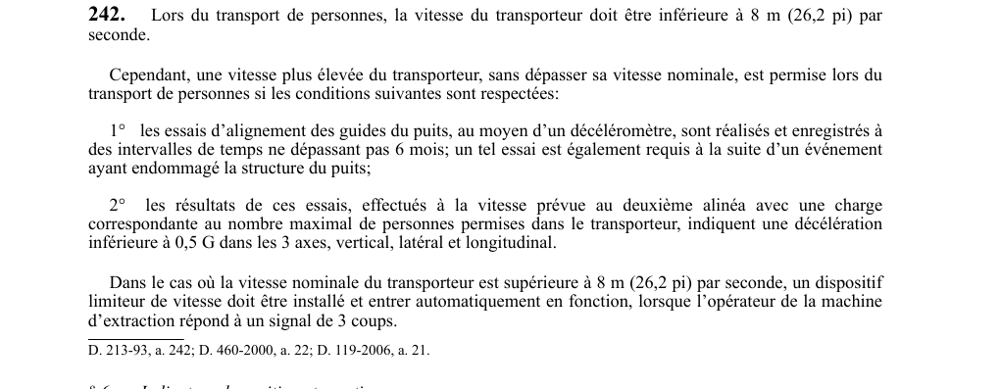

art-242-RSSM : vitesse transporteur transport personnes puits
Un article du wiki ⚖️ Recueil législatif
En bref
Lors du transport de personnes, la vitesse du transporteur doit être inférieure à 8 m. Il s'agit d'une obligation.
- Essais d'alignement des guides au décéléromètre sont réalisés.
- Vitesse inférieure à 8 m (26
- Vitesse plus élevée permise si essais décéléromètre ≤ 6 mois.
- Limiteur de vitesse automatique requis si vitesse nominale > 8 m/s lors signal 3.
🌐 LegisQuébec · 📄 PDF officiel
Texte officiel : capture du PDF

Toucher l'image pour l'agrandir🔗 Voir art. 242 RSSM dans le PDF (page 72)
Version : texte officiel du RSSM (RLRQ c. S-2.1, r. 14), à jour au 1er mai 2024 — Éditeur officiel du Québec
Voir aussi
- art. 240 : taquets sécurité transport personnes multicâble · obligation : lorsque des personnes sont transportées au moyen d'une machine d'extraction à poulie d'adhérence multicâble, les compartiments d'extraction doivent être munis de taquets de sécurité à la limite supérieure de parcours, capables de retenir la cage, le skip.
- art. 241 : dispositifs de survitesse du câble · obligation : chaque tambour ou poulie d'adhérence d'une machine d'extraction dont la vitesse du câble est de 4 m (13,1 pi) par seconde ou plus doit être muni de dispositifs de sécurité automatiques supprimant la force motrice.
- art. 243 : indicateur position transporteur puits · obligation : une machine d'extraction doit être munie d'un indicateur de position montrant constamment à l'opérateur la position du transporteur et du contrepoids dans le puits et le chevalement ; en cas de panne d'alimentation électrique.
- art. 244 : avertisseur sonore zone décélération puits · obligation : lorsque la profondeur d'un puits dépasse 100 m (328,1 pi), un avertisseur sonore doit annoncer à l'opérateur de la machine d'extraction l'approche du transporteur dans une zone de décélération.
- ⚖️ Loi habilitante : LSST
- ↑ Index du bloc : Engins miniers
Pages qui pointent ici (5)
- art-240-RSSM : taquets sécurité transport personnes multicâble Recueil législatif
- art-241-RSSM : dispositifs de survitesse du câble Recueil législatif
- art-243-RSSM : indicateur position transporteur puits Recueil législatif
- art-244-RSSM : avertisseur sonore zone décélération puits Recueil législatif
- RSSM : Engins miniers (art. 201 à 250) Recueil législatif